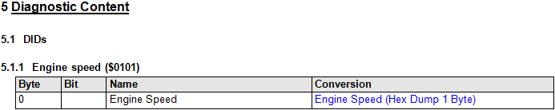

CANdelaStudio can export a document to...
[RP-R100 Filter] The document can be filtered by
[RP-R110 Language] You can select the language for fix strings contained in the report.
Report skips...
Cf. the diagnostic instance icons in the navigation tree.
[RP-R120 Front Page] The front page contains
For export to RTF, you can adapt the layout of the front page (requires knowledge of RTF).
[RP-R130] Contains the information entered in the Revision History Dialog, if enabled in Ribbon Tab File | Options [OPT-R500].
[RP-R140] Contains a fixed text.
[RP-R150] Contains the text entered in the dialog File | Properties dialog "Short Description".
[RP-R160] Describes
R075.0 (Report): in the overview chapter, for a locked variant, add “(locked)” behind the variant name.
[RP-R170] Contains the interfaces and communication parameters.
[RP-R175] For a given interface, ...
[RP-R180] Contains the variants.
See details below for...:
[RP-R190] Contains the State Dependency info.
[RP-R200] Contains the Data Types.
Option "Write even objects not used in document" [OPT-R440] applies to this chapter.
[RP-R210] Contains the Attribute values of all objects in the document.
Note: the chapter does not list DTC attributes (which would make the list very long). DTC attributes with setting “visible in separate table column” [ATTR-R090] are exported in the contents chapter [RP-R180].
[RP-R220] Contains the Protocol Services.
[RP-R230] Contains the Negative Response Codes on document level and for unsupported services.
[RP-R240] Lists Services by their abstract.
[RP-R250] Lists the diagnostic objects by their name.
You may want to...
[RP-R260] Writing Descriptions
[RP-R260-Cell] Report prints the description in italic font if written with the name in one table cell.
[RP-R260-Option] A user option controls how descriptions are exported:
You want to generate the RTF or HTML report with explaining texts in his language.
This is about generated text (fix strings) like “Author:”, not about texts specified in the CANdela document.
In the file selection dialog for report, you can select from a set of languages, which is taken from the file Bin\Report\FixStr.tmx in the CANdelaStudio installation folder. The file contains fix string translations.
For detailed information about the TMX standard refer to "Translation Memory eXchange" ("TMX") at http://www.gala-global.org/lisa-oscar-standards .
There are a lot of different state graphs (service- and variant centric graphs) and therefore not all of them are shown within the RTF-Export. Additional information (provided in tooltips within CANdelaStudio) must be presented in another form (e.g. in tables).
The state groups are listed under every variant. The corresponding State Graph (see 2.1) is shown and a table describes the state dependencies in detail.
Services of the same DiagClassServiceTemplate which are all of the same behavior are combined (DiagClassName/*/DiagClassServiceTemplateName). Services which cannot be combined are listed separately with their service prefix and their name (DiagClass-Name/InstanceName/ServiceTemplateName). If the behavior of a Service differs from the behavior in other variants then the name and the service prefix is printed italic.
| Service | Prefix | State1 | State2 | State3 |
|---|---|---|---|---|
| AnyClass/*/AnyServiceTmpl | 12 xx | - | n.a. | State1 |
| SomeClass/Instance1/ServiceTmpl1 | 13 01 | - | n.a. | n.a. |
| SomeClass/Instance2/ServiceTmpl1 | 13 02 | - | n.a. | n.a. |
| SomeClass/Instance3/ServiceTmpl1 | 13 03 | - | - | n.a. |
- executablen.a. Service(s) are not applicable within this state.StateX executable with state change to <State>.Note: available since 8.1 (CDS-19553), per variant since 8.5 (CDS-37944).

DIDs in Report
[RP-R900] if the variant contains at least one DID, Report writes DIDs in the chapter of the variant, before the diagnostic instances (CDS-37944 R900, 8.5).
[RP-R910] the chapter contains
[RP-R920] Report writes a DID Data Reference...
Engine Speed ($0101).[RP-R925] Report writes for a DID Reference (CDS-37676)...
[RP-R960] Report puts each DID occurrence into the index, ...
[RP-R310] The report represents...
[RP-R320] The Report does not write Events.
Motivation:
[RP-R410] This feature is controlled by the option [OPT-R410].
Ctrl-A F9 to update all fields.[RP-D410-Limit] Microsoft Word (as of 2016) has a built-in limit for the number of fields it can handle in a document.
[RP-D420-Image] Automatic update of fields in the generated RTF document may take a long time in case Microsoft Word additionally saves each image in WMF (Windows Meta File) format.
You may...
DOCX format,